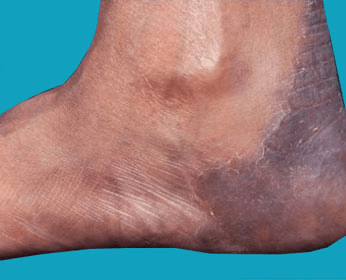
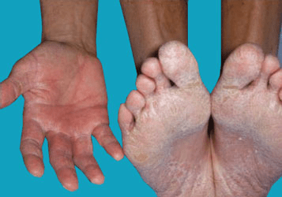
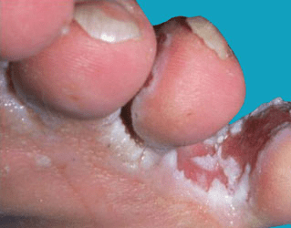

What is Athlete's Foot?
Athlete's foot (tinea pedis), also known as ringworm of the foot, is a surface
(superficial) fungal infection of the skin of the foot. The most common fungal
disease in humans, athlete's foot, may be passed to humans by direct contact
with infected people, infected animals, contaminated objects (such as towels
or locker room floors), or the soil.

- Athlete’s foot is a fungal infection that affects the skin on the feet.
- This condition is contagious, and can spread to the toenails or hands.
- Going barefoot in public places, such as locker rooms, is a common way
to get athlete’s foot.
Athlete’s foot — also called tinea pedis — is a contagious fungal infection that
affects the skin on the feet. It can also spread to the toenails and the hands.
The fungal infection is called athlete’s foot because it’s commonly seen in athletes.
Athlete’s foot isn’t serious, but sometimes it’s hard to cure. If you have diabetes
or a weakened immune system and suspect you have athlete’s foot you should call
your doctor right away.
Athlete’s foot occurs when the tinea fungus grows on the feet. You can catch the
fungus through direct contact with an infected person, or by touching surfaces
contaminated with the fungus. The fungus thrives in warm, moist environments.
It’s commonly found in showers, on locker room floors, and around swimming pools.

Anyone can get athlete’s foot, but certain behaviors increase your risk.
Factors that increase your risk of getting athlete’s foot include:
- Visiting public places barefoot, especially locker rooms, showers,
and swimming pools
- Sharing socks, shoes, or towels with an infected person
- Living in warm, humid climates
- Wearing tight-fitting, closed-toe shoes
- keeping your feet wet for long periods of time
- Having sweaty feet
- Having a minor skin or nail injury on your foot
- Having diabetes or a weak immune system
The most common locations for athlete's foot include:
- Spaces (webs) between the toes, especially between the 4th
and 5th toes and between the 3rd and 4th toes
- Soles of the feet
- Tops of the feet
Athlete's foot may affect one or both feet. It can look different depending on which
part of the foot (or feet) is involved and which fungus (ie, dermatophyte) has caused
the infection:
- On the top of the foot,athlete's foot appears as a red scaly patch or patches,
ranging in size from 1 to 5 cm. The border of the affected skin may be raised,
with bumps, blisters, or scabs. Often, the center of the lesion has normal-appearing
skin with a ring-shaped edge, leading to the descriptive but inaccurate name ringworm.
(It is inaccurate because there is no worm involved.)
- Between the toes (the interdigital spaces),athlete's foot may appear as
inflamed, scaly, and soggy tissue. Splitting of the skin (fissures) may be present
between or under the toes. This form of athlete's foot tends to be quite itchy.
- On the sole of the foot (the plantar surface),athlete's foot may appear as
pink-to-red skin with scales ranging from mild to widespread (diffuse).
- Another type of tinea pedis infection, called bullous tinea pedis,has
painful and itchy blisters on the arch (instep) and/or the ball of the foot.
- The most severe form of tinea pedis infection,called ulcerative tinea pedis,
appears as painful blisters, pus-filled bumps (pustules), and shallow open sores (ulcers).
These lesions are especially common between the toes but may involve the entire sole.
Because of the numerous breaks in the skin, lesions commonly become infected with bacteria.
Ulcerative tinea pedis occurs most frequently in people with diabetes and others with
weak immune systems.
There are many possible symptoms of athlete’s foot, which include:
- itching, stinging, and burning between the toes
- itching, stinging, and burning on the soles of the feet
- blisters on the feet that itch
- cracking and peeling skin on the feet, most commonly between the toes
and on the soles
- dry skin on the soles or sides of the feet
- raw skin on the feet
- discolored, thick, and crumbly toenails
- toenails that pull away from the nail bed

A doctor may diagnose athlete’s foot by the symptoms. Or, a doctor may
order a skin test if they aren’t sure a fungal infection is causing your symptoms.
A skin lesion potassium hydroxide (KOH) exam is the most common test for athlete’s
foot. A doctor scrapes off a small area of infected skin and places it in
potassium hydroxide (KOH). The KOH destroys normal cells and leaves the
fungal cells untouched so they are easy to see under a microscope.
If you suspect that you have athlete's foot, you might try one of the
following over-the-counter antifungal creams or lotions:
- Terbinafine
- Clotrimazole
- Miconazole
Apply the antifungal cream between the toes and to the soles of both feet for
at least 2 weeks after the areas are completely clear of lesions.
In addition, try to keep your feet dry, creating a condition where the fungus
cannot live and grow:
- Wash your feet daily and dry them carefully, even using a hair dryer
(on low setting) if possible.
- Use a separate towel for your feet, and do not share this towel with anyone else.
- Wear socks made of cotton or wool, and change them once or twice a day,
or even more often if they become damp.
- Avoid shoes made of synthetic materials such as rubber or vinyl.
- Wear sandals as often as possible.
- Apply antifungal powder to your feet and inside your shoes every day.
- Wear protective footwear in locker rooms and public or community pools and showers.
If the lesions do not improve after 2 weeks of applying over-the-counter antifungal creams or
if they are exceptionally itchy or painful, see your doctor for an evaluation. If you have
blisters, pustules, and/or ulcers on your feet, see a doctor as soon as possible.
Athlete’s foot can often be treated with over-the-counter (OTC) topical antifungal
medications. If OTC medications don’t treat the fungal infection, your doctor may
prescribe topical or oral prescription-strength antifungal medications. Your doctor
may also recommend home treatments to help clear up the infection.
OTC medications
There are many OTC topical antifungal medications, including:
- miconazole (Desenex)
- terbinafine (Lamisil AT)
- clotrimazole (Lotrimin AF)
- butenafine (Lotrimin Ultra)
- tolnaftate (Tinactin)
Prescription medications
Some of the prescription medications your doctor may prescribe for athlete’s foot include:
- topical, prescription-strength clotrimazole or miconazole
- oral antifungal medications such as itraconazole (Sporanox), fluconazole (Diflucan),
or prescription-strength terbinafine (Lamisil)
- topical steroid medications to reduce painful inflammation
- oral antibiotics if bacterial infections develop due to raw skin and blisters
Home care
Your doctor may recommend that you soak your feet in salt water or diluted vinegar
to help dry up blisters.
Alternative therapy
Tea tree oil (Melaleuca alternifolia) has been used as an alternative therapy for treating
athlete’s foot with some success. A scientific study published in the August 2002 issue of
the Australian Journal of Dermatology reported that a 50 percent solution of tea tree oil
effectively treated athlete’s foot in 64 percent of trial participants.
Ask your doctor if a tea tree oil solution can help your athlete’s foot. Tea tree oil can
cause contact dermatitis in some people.
Athlete’s foot can lead to complications in some cases. Mild complications include an
allergic reaction to the fungus, which can lead to blistering on the feet or hands.
It’s also possible for the fungal infection to return after treatment.
There can be more severe complications if a secondary bacterial infection develops.
In this case, your foot might be swollen, painful, and hot. Pus, drainage, and fever
are additional signs of a bacterial infection.
It’s also possible for the bacterial infection to spread to the lymph system. A skin
infection could lead to lymphangitis (infection of the lymph vessels) or lymphadenitis
(infection of the lymph nodes).
Athlete’s foot infections can be mild or severe. Some clear up quickly, and others last a
long time. Athlete’s foot infections generally respond well to antifungal treatment. However,
sometimes fungal infections are difficult to eliminate. Long-term treatment with antifungal
medications may be necessary to keep athlete’s foot infections from returning.
There are several things you can do to help prevent athlete’s foot infections. These include:
- Wash your feet with soap and water every day and dry them thoroughly,
especially between the toes.
- To kill the fungus, you will need to wash in 140°F (60°C) water or higher.
Combining washing with OTC anti-fungal recommendations should treat most cases
of athlete’s foot. Regarding shoes, you can disinfect them using disinfectant
wipes (like Clorox wipes) or sprays.
- Put antifungal powder on your feet every day.
- Don’t share socks, shoes, or towels with others.
- Wear sandals in public showers, around public swimming pools, and in other
public places.
- Wear socks made out of breathable fibers, such as cotton or wool, or made
out of synthetic fibers that wick moisture away from your skin.
- Change your socks when your feet get sweaty.
- Air out your feet when you are at home by going barefoot.
- Wear shoes made of breathable materials.
- Alternate between two pairs of shoes, wearing each pair every other day,
to give your shoes time to dry out between uses. Moisture will allow the
fungus to continue to grow.